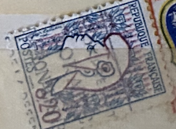
| SOURCE | TITLE| IMAGE MATCH | click to source page |
| World Stamps Project | France, specialized philately: varieties and types – World Stamps Project | 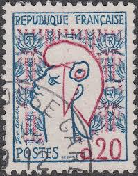 |
| World Stamps Project | France, postage stamp varieties, the 5th Republic – World Stamps Project | 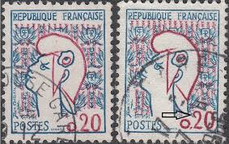 |
| eBay | France - 1961 New Marianne Type | eBay | 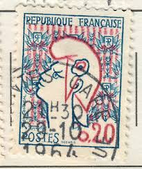 |
| blloxo.com | Album of my Stamps | Postage Stamps | 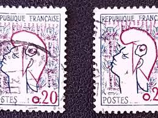 |
| Shutterstock | France Circa 1961 Stamp Printed France Stock Photo 2680811819 | Shutterstock | 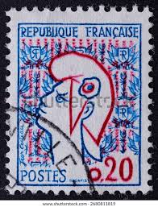 |
| Find Your Stamps Value | Value of rf postes 6f stamps | 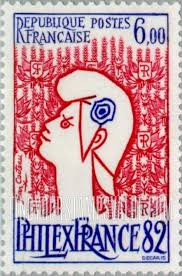 |
| allnumis.com | 0.20 Francs 1961 - Marianne: Jean Cocteau, Marianne-Liberté-Sabine-Semeuse - France - Stamp - 52119 | 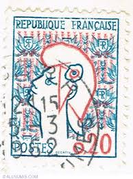 |
| lastdodo.fr | Jean Cocteau [1889-1963] Catalogue de timbres - LastDodo | 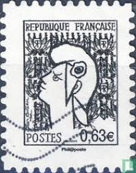 |
| Shutterstock | 8 Marianne Cocteau Royalty-Free Images, Stock Photos & Pictures | Shutterstock | 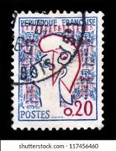 |
| Flickr | beautiful french stamp Briefmarke France 0,20 timbre Franc… | Flickr | 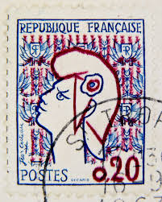 |
| dezeekoe.nl | Conductive Copper Tape Conductive Grid Tape - 1.9 Mil Thick, 1 1/4 Inch X 36 Yards ESD Safe Anti-Static Tape Specialty Electrical Tape | 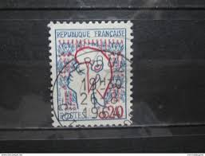 |
| Alamy | France Marianne Cocteau Allegory Republic Liberty Phrygian Cap Classic Vintage Stamp! This artistically distinctive French definitive stamp issued Feb Stock Photo - Alamy | 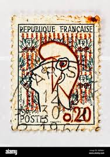 |
| Dreamstime.com | Isolated French Stamp editorial photography. Image of retro - 321671617 | 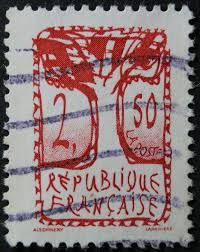 |
| Dreamstime.com | Postage Stamp Printed in France Shows Marianne: Jean Cocteau, 0.20 â‚£ - French Franc, Serie, Circa 1961 Editorial Photography - Image of mail, letter: 161690332 | 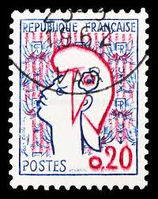 |
| Alamy | TOGO - CIRCA 1957: stamp printed by Togo, shows Konkomba Helmet, circa 1957 Stock Photo - Alamy | 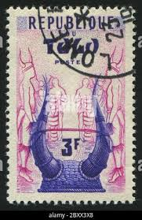 |
| French Southern and Antarctic Lands (Terres australes et antarctiques françaises) - International Geophysical Year (1957) : r/philately | 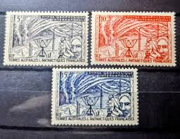 | |
| Mercari | Phillipines Vintage Stamps | Mercari | 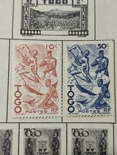 |
| Alamy | Proclamation of first republic france hi-res stock photography and images - Alamy | 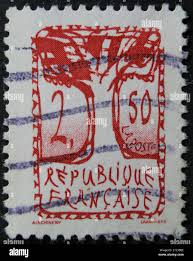 |
| Stampedia | stampedia FRANCE STAMP catalog | 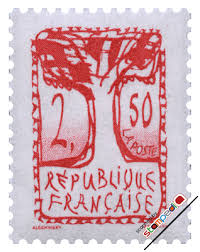 |
| Stamp Community Forum | France Decaris Rooster Stamps 1962 And 1965 - Stamp Community Forum | 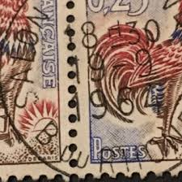 |
| eBay | France HB 8 1982 Philexfrance International Philatelic Exhibition MNH | eBay | 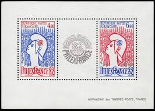 |
| eBay | France 1961 YV 1282 ERROR:colour red missing MNH VF / CAT VALUE $1500 | eBay | 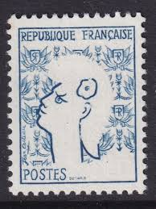 |
| Cherrystone Auctions | U.S. and Worldwide Stamps & Postal History - February 28-March 1, 2017 - FRANCE | 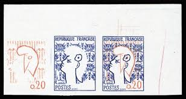 |
| eBay | Superb! Red Variety Absent On Marianne By Cocteau No. 1282 Mint ** Luxury MNH | eBay | 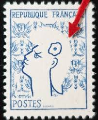 |
| Filatelia Kevorkian | OBOCK (DJIBUTI) STAMPS, 1892 - CLASSIC STAMPS - FRENCH COLONIES - YV 23 - OVERPRINT - 1 VALUE - CANCELED - Filatelia Kevorkian | 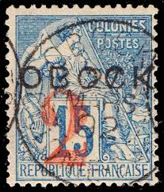 |
| eBay | Variety With Accent On Stamp of The Réunion N° 18a used Seal To Date Blue | eBay Australia | 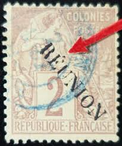 |
| eBay | FRANCE 1982, MARIONETTES, Scott 1842 - LOT OF 4 MNH | eBay | 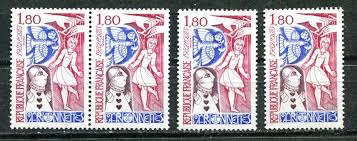 |
| eBay | French & Colonies Used 1891-1900 Year of Issue Stamps for sale | eBay | 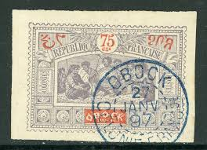 |
| eBay | Signed Calves - Sage No. 64 Green Used Date Stamp (40) | eBay | 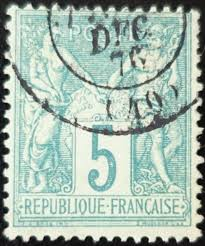 |
| eBay | FRANCE REVENUE TIMBRE FISCAL 50¢ USED BOURGES CDS 1931 | eBay | 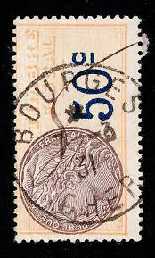 |
| postbeeld.com | Stamps from Central Africa - PostBeeld - Online Stamp Shop - Collecting | 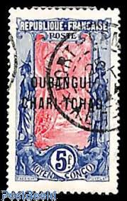 |
| Stamp Auction Network | Spink Shreves Galleries Sale - 135 Page 51 | 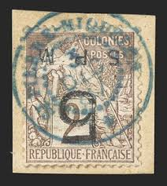 |
| eBay | Shipping Bulletin For A 7.60FR Small Postal Package From Paris | eBay | 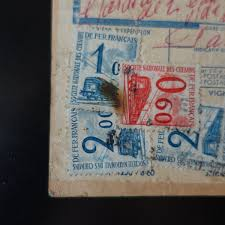 |
| eBay | 2052 - FRANCE - SCOTT# 1821 - MNH - CAT $10.00 | eBay | 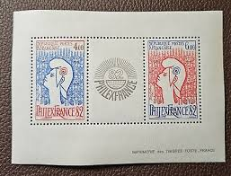 |
| Stamp Auction | Daniel F. Kelleher Auctions, LLC Sale - 808 Page 6 | 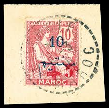 |
| eBay | FRANCE MNH Sc 1821 IMPERF Yv BF 8 Imperf PhilexFrance | eBay | 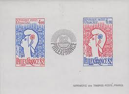 |
| eBay UK | FRANCE COLONIES AFRICA GUINEA + AOF...1900-41 Postmarks..Priced Individually | eBay UK | 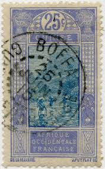 |
| Stamp Forgeries of the World | Stamp forgeries of French Offices in China | Stampforgeries of the World | 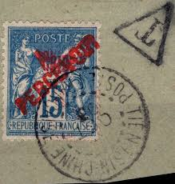 |
| philatelie-pilatte-stamps.com | Cochin china 5 used | 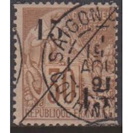 |
| eBay | Specimen, France Sc2307 French Revolution Bicentenary, Contemporary Art | eBay | 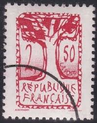 |
| eBay | DP Stamps Gabon 1886 SC 3 Mint | eBay | 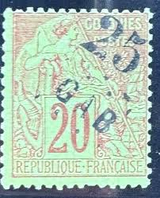 |
| eBay | French Aviation Multi-Color Stamps for sale | eBay | 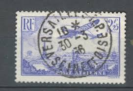 |
| Stamp Auction | Prices Realized | 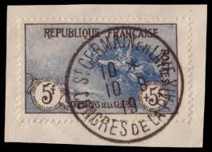 |
| Dreamstime.com | Peace and Commerce (Type Sage), Serie, Circa 1876 Editorial Photo - Image of people, commerce: 141770221 | 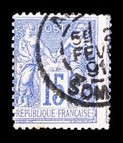 |
| PicClick UK | FRANCE 1929 10F Used Port De La Rochelle Stamp R3523 £6.00 - PicClick UK | 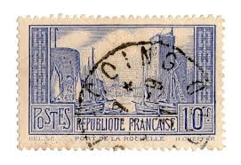 |
| PicClick | Congo 5 Francs FOR SALE! - PicClick | 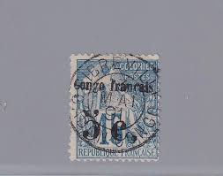 |
| eBay | Snakes Stamps for sale | eBay | 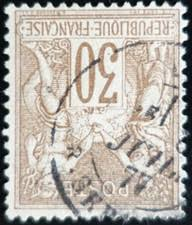 |
| eBay | DP Stamps Tahiti - 1893 SC 22 Used | eBay | 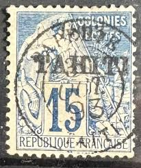 |
| eBay | Stamps New Caledonia Scott #39 hinged | eBay | 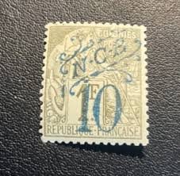 |
| Stamp Auction | BEHR Philatelie Sale - 60 Page 114 | |
| eBay | Superb! Artist's proof in the final color tax stamp No.44 | eBay | |
| Society of Indo-China Philatelists | Commerce | |
| HipStamp | French ST Pierre SC #10 VAR. Inverted Surcharge 1885 Mint OG H LOT #65965 | Europe - France & Colonies, General Issue Stamp / HipStamp | |
| 1936 French Airmail: Caudron "Simoun" plane flying over Paris. Notice the missing empenage (tail piece) on the plane. To avoid confusion between the 2 green stamps, the highest denomination 50 Fr was | ||
| eBay | Superb And Signed Brun! Variety Rlunion On Réunion No. 13A Used Date Cancel | eBay | |
| eBay | 1877-80 15c France Peace & Commerce Stamp Cancelled Scott #92 Type II [010422b] | eBay | |
| eBay | Variety '0' Broken On Stamp From Martinique No. 8 Used Date Cancellation | eBay | |
| eBay | FRENCH OBOCK @ Classic 1892 Yvert 3 € 630.00 Used @ Fr.933 | eBay | |
| eBay | FRANCE USED 1876-77 25c PEACE & COMMERCE ISSUE REPUBLIQUE FRANCAISE - #6795 | eBay | |
| eBay | Variety With Accent On Stamp From La Réunion No. 20B Used Value 65€ (7) | eBay |